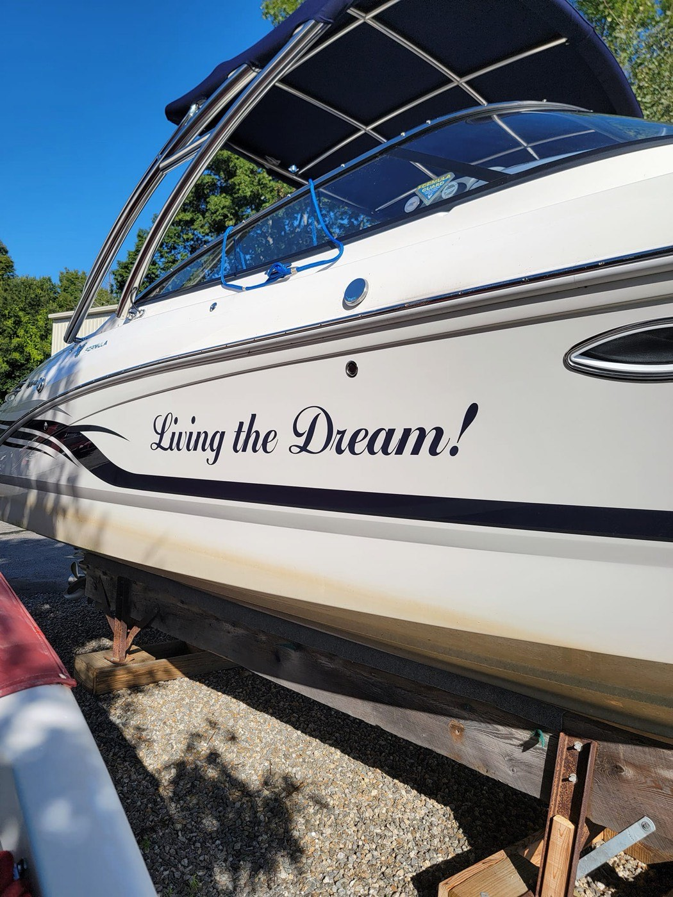
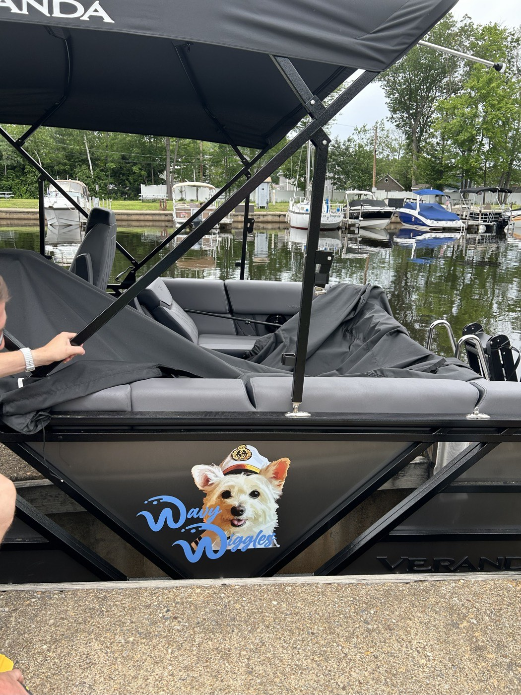
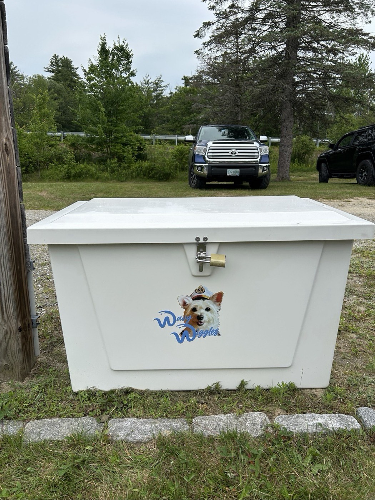
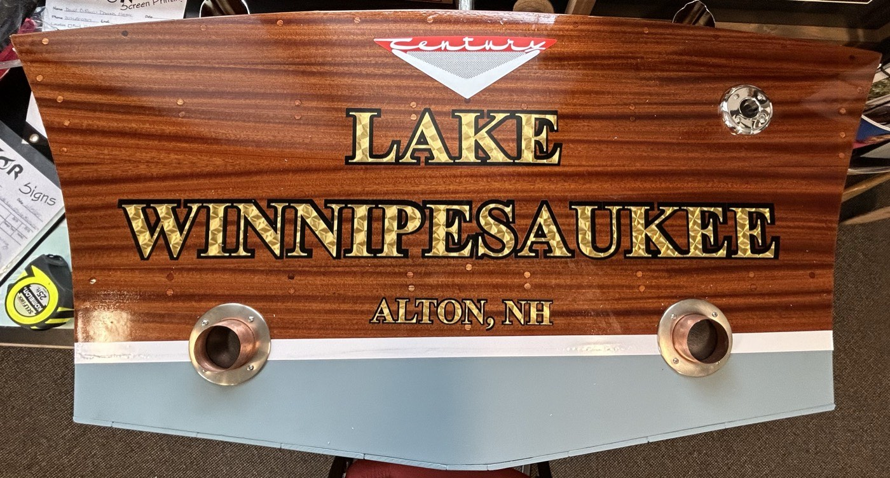
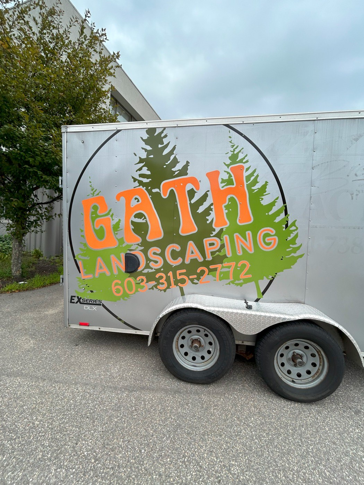
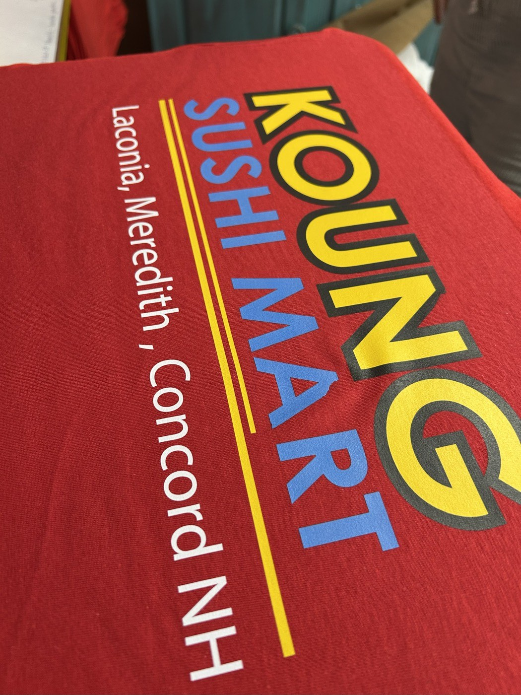

Case study · Client work · 2024–2025
Two summers as graphic designer and manager at a sign shop in Laconia, New Hampshire, making custom boat graphics, signs, apparel and vehicle graphics for local businesses and boat owners.
My role
Graphic designer & manager
Timeline
Summers 2024–2025
Where
Gator Graphix · Laconia, NH
Tools
Adobe Illustrator, large-format printers and vinyl cutters
The job
Class projects have imaginary clients. At Gator Graphix every job had a real person waiting for it, often with a boat that needed to be on the water by the weekend.
I met with customers one on one, turned their ideas into designs in Illustrator, then printed, cut and installed the work myself. As manager, I also kept jobs moving and the equipment running.
How a job works
Step 1
Talk through the idea, size, budget and where it will live.
Step 2
Draft options in Illustrator and refine them with the client.
Step 3
Print or cut the vinyl and prep the surface.
Step 4
Apply on site, from transoms and decks to trailers.
Step 5
Walk the client through it and fix anything before they leave.
Boat lettering has to read from the dock, survive sun and spray, and fit curves that are never quite flat.

Transom lettering, sized and spaced to read from across the water.

A script name cut in vinyl and laid onto the deck.

Hull graphics designed to follow the curve of the boat.
One customer wanted their dog on everything. I turned a photo into a clean graphic, then adapted it for the boat, the hull script and a dock box, so the set feels like one brand.

“Living the Dream!” in script along the hull.

The dog graphic on the boat.

The same graphic on a matching dock box.

Gold lettering for a classic Century boat: “Lake Winnipesaukee, Alton, NH.”

Trailer graphics for Gath Landscaping.

A printed shirt for Koung Sushi Mart in Laconia and Concord.

A “Pool Closed” sign for a local property.

Window and shop signage.

A sign for the Long Bay Garden Club.
Reflection
Designing for a real customer means listening first.
What worked
Asking lots of questions up front. The fewer surprises at the proof stage, the happier the client and the faster the install.
What I learned
Production shapes design. Knowing how vinyl cuts, stretches and weathers changed how thin I drew letters and how I spaced them.
Next time
I’d keep a simple brand guide for repeat clients, so their logo and colors stay consistent from one job to the next.
Next project
Intertwine →